Robotics Engineer & Researcher
University of Khartoum, Sudan
Univ. Politecnica delle Marche, Italy
I am a robotics engineer and researcher working at the intersection of robotics, assistive technology, and brain–machine interfacing (BMI). My research focuses on developing intelligent and adaptive technologies that create a direct and meaningful connection between humans and machines.
I develop assistive and human-centered robotic systems designed to understand human intention, adapt to individual users, and support people in performing physical and cognitive tasks. My work combines robotics, artificial intelligence, human–robot interaction, physiological and neural signal processing, and intelligent control.
A major focus of my research is the development of brain–machine and human–machine interfaces that allow users to interact with robotic systems through neural or physiological signals. I explore how these interfaces can be integrated with robotic platforms to create more natural, intuitive, and personalized assistive technologies.
I develop technologies for assistive and rehabilitation applications, with the broader goal of augmenting human capabilities, improving independence, and enabling people with disabilities to interact more naturally with their environment and with intelligent machines.
My research approach is strongly interdisciplinary, combining robotics engineering, neurotechnology, artificial intelligence, signal processing, and human-centered design. I am particularly interested in translating advanced research into practical systems that can operate reliably in real-world environments and have a meaningful impact on people's lives.
“My long-term research vision is to develop intelligent robotic systems that can perceive human needs, understand human intent, learn from interaction, and work collaboratively with people—moving toward a future in which technology does not simply assist humans, but becomes a natural extension of human abilities.”
The overarching PhD research — published in Frontiers in Robotics and AI, 2025
This research introduces a three-layered control system for indoor mobile robot navigation in spaces shared with elderly or disabled individuals. The first layer implements a human-in-the-loop approach using a Brain-Computer Interface (BCI), allowing real-time human feedback via Error-Related Potentials (ErrP) from EEG signals to correct the robot when it fails to detect obstacles invisible to onboard sensors.
The second layer is semi-online, establishing dynamic virtual borders for real-time navigation safety using point cloud data and ROS — enabling flexible, hardware-free zone restriction that can be activated remotely via cloud or local network.
The third layer is an offline layer that leverages Building Information Models (BIM) and semantic data, incorporating a new global path-planner that utilises both the robot's knowledge and the building's digital twin. Collectively, this system prioritises user-centric, safe navigation in environments with vulnerable occupants.
Full system paper: K. Omer & A. Monteriù, "Multi-layer robotic controller for enhancing the safety of mobile robot navigation in human-centered indoor environments," Frontiers in Robotics and AI, vol. 12, p. 1629931, 2025.
Three complementary layers of robot intelligence for safe human-centered navigation
A BCI protocol based on Error-Related Potentials (ErrP) allows a human operator to passively correct robot navigation errors in real time. EEG signals are classified and fed back into the ROS navigation stack. Mental Fatigue Indices (MFI) ensure sustainability for elderly or disabled users.
A ROS-based method generates virtual walls, doors, and restricted-area borders from point cloud data without specialised hardware. Borders are published as sensor topics to the robot cost map and activated/deactivated remotely via cloud. Supports single and multi-robot systems.
Semantic and metric data extracted from a building's Digital Twin (IFC/BIM) is stored in an RDF graph database and used to generate robot-specific navigation maps. A modified A* path planner assigns semantic penalties for walls, glass, and classified obstacles — enabling context-aware paths.
Key peer-reviewed papers forming the PhD thesis
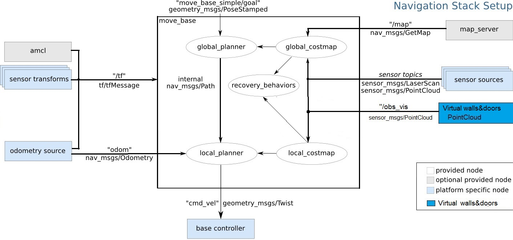
EEG-based ErrP BCI for real-time obstacle correction feedback. Vol. 9, p. 909971, Frontiers Media SA, 2022.
Ferracuti, Freddi, Iarlori, Monteriù, Omer, Porcaro
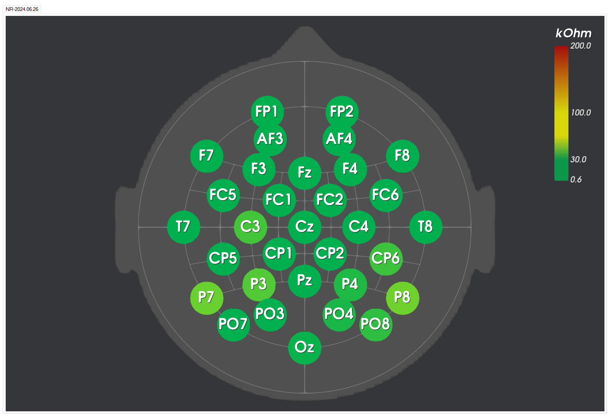
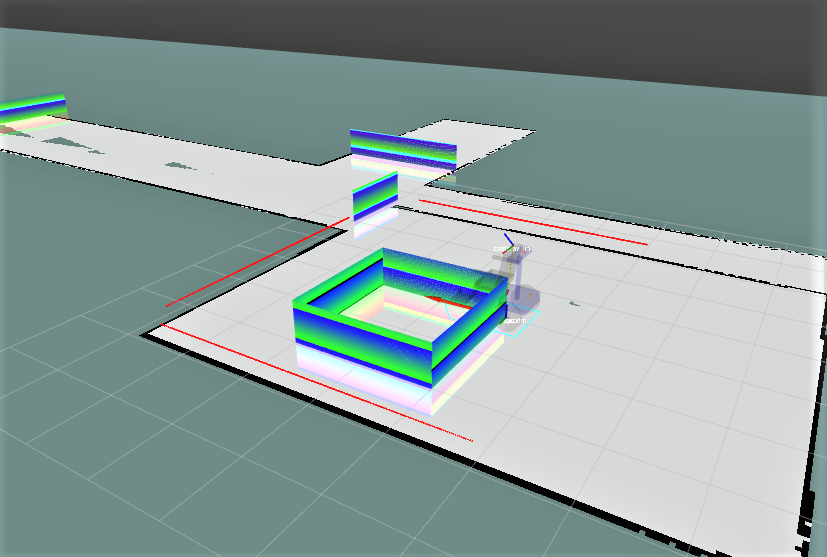
ROS + point-cloud virtual wall generation without specialised hardware. Proc. 9th ICARA, pp. 192-196, IEEE, 2023.
K. Omer & A. Monteriù
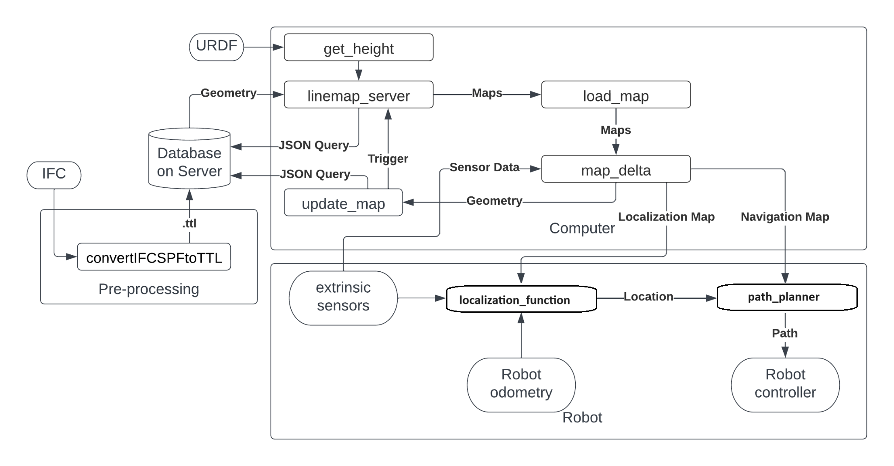
Semantic BIM integration for robot-specific navigation maps with safety-aware A* planning. Proc. 10th ICARA, pp. 185-190, IEEE, 2024.
K. Omer, E. Torta, A. Monteriù
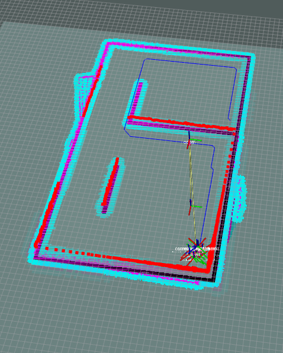
Full BIM-to-path-planner pipeline using RDF graph database with per-class obstacle penalties. Robot World Cup, pp. 56-67, Springer Nature, 2024.
Omer, de Vos, Pauwels, Torta, Monteriù
Conference papers, workshops, and extended research directions (2022–2026)
Conference version of the ErrP-BCI human-in-the-loop work. Designed the oddball protocol for EEG acquisition and tested 10 subjects. Proc. IEEE MetroXRAINE, pp. 416-421, 2022.
Omer, Ferracuti, Freddi, Iarlori, Monteriù, Porcaro
Compares passive ErrP vs. P300/SSVEP methods for mental load using MFI indices. Passive BCIs showed lower fatigue. Proc. IEEE MetroXRAINE, pp. 787-792, 2023.
Omer, Vella, Ferracuti, Freddi, Iarlori, Monteriù
Overview of BCI applications for enhancing quality of life. Int. Conference on Engineering, Science and Advanced Technology, p. 237, 2023.
K. Omer
Extends ErrP classification to four error severity classes for finer-grained robot correction. Proc. IEEE MetroXRAINE, pp. 1131-1135, 2025.
Omer, Ferracuti, Freddi, Iarlori, Monteriù
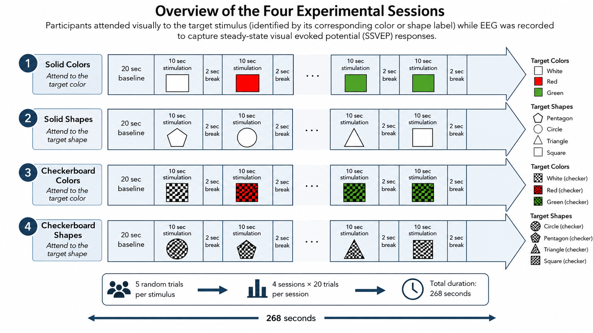
SSVEP-based active BCI using object detection in first-person view for effortless assistive robot control. Proc. IEEE MetroXRAINE, pp. 1194-1199, 2025.
K. Omer & A. Monteriù
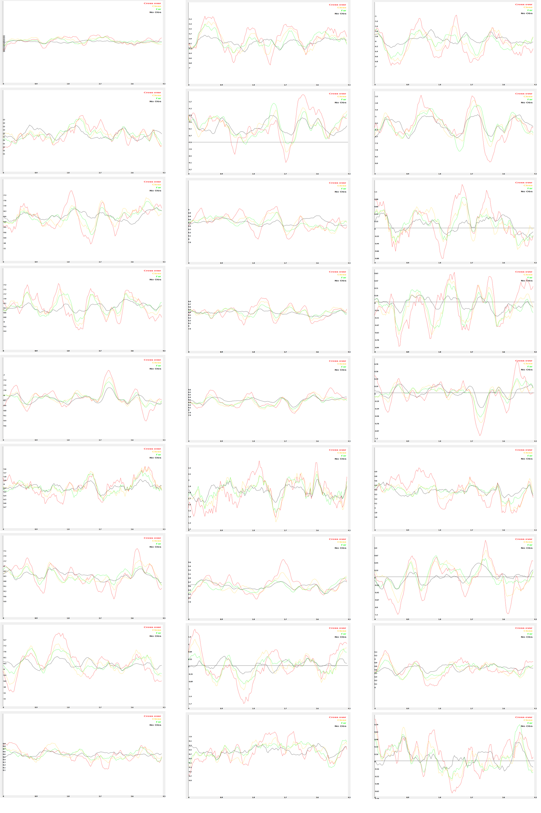
Deploys multi-class ErrP classification on edge hardware via Edge Impulse for embedded BCI navigation correction. Proc. 12th ICARA, pp. 545-549, IEEE, 2026.
K. Omer & A. Monteriù
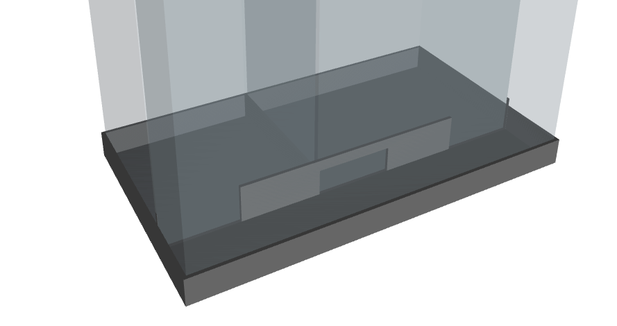
Integrates Edge AI object recognition with BIM digital twins to enhance robot indoor navigation. Proc. IEEE MetroLivEnv, pp. 490-494, 2025.
K. Omer & A. Monteriù
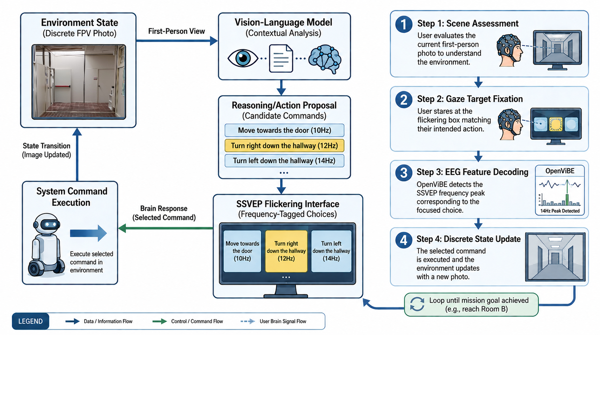
Uses VLMs to reduce cognitive workload in BCI paradigms for natural control of assistive technologies in VR and robotics. IEEE MetroXRAINE 2026.
K. Omer & A. Monteriù
Unified cognitive architecture for proactive AAL using local VLMs, heterogeneous robots and IoT without cloud inference. Proc. IEEE MetroLivEnv, pp. 157-161, 2026.
Omer, Ferracuti, Monteriù
Architecture enabling natural language dialogue and action execution for assistive robots, moving toward embodied AI for AAL. Proc. 12th ICARA, pp. 42-47, IEEE, 2026.
K. Omer & A. Monteriù
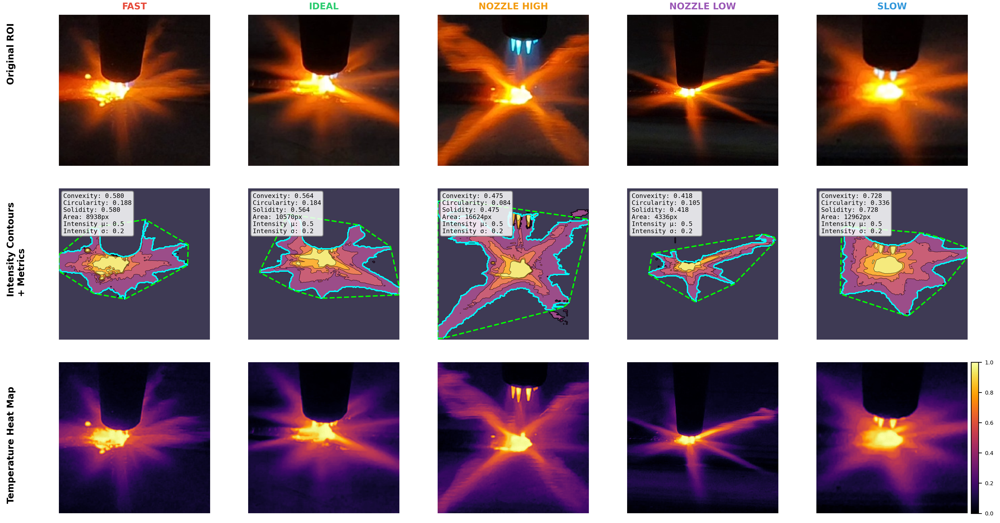
Multimodal deep learning framework for real-time fault detection in industrial robotic oxy-fuel cutting. Addresses open-loop limitations that degrade cut quality and increase waste.
K. Omer et al.
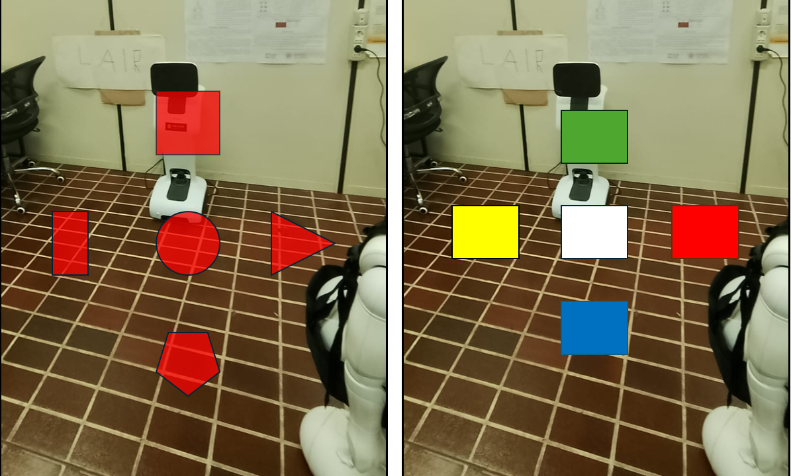
Investigates how stimulus shape, color, and texture affect SSVEP BCI performance in dynamic FPV robotic and VR environments.
K. Omer & A. Monteriù
Selected figures from the core publications
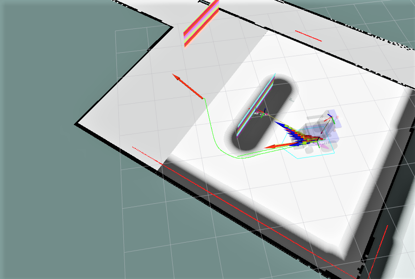
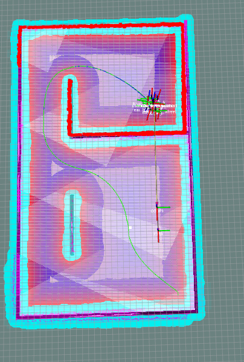
All citations sourced from official publication records — click to expand
@article{omer2025multilayer,
author = {Omer, Karameldeen and Monteriù, Andrea},
title = {Multi-layer robotic controller for enhancing the safety of mobile
robot navigation in human-centered indoor environments},
journal = {Frontiers in Robotics and AI},
volume = {12},
pages = {1629931},
year = {2025},
publisher = {Frontiers Media SA},
doi = {10.3389/frobt.2025.1629931}
}@article{ferracuti2022humanloop,
author = {Ferracuti, Francesco and Freddi, Alessandro and Iarlori, Sabrina
and Monteriù, Andrea and Omer, Karameldeen Ibrahim Mohamed and Porcaro, Camillo},
title = {A human-in-the-loop approach for enhancing mobile robot navigation
in presence of obstacles not detected by the sensory set},
journal = {Frontiers in Robotics and AI},
volume = {9},
pages = {909971},
year = {2022},
publisher = {Frontiers Media SA},
doi = {10.3389/frobt.2022.909971}
}@article{omer2025brainsci,
author = {Omer, Karameldeen and Ferracuti, Francesco and Freddi, Alessandro
and Iarlori, Sabrina and Vella, Francesco and Monteriù, Andrea},
title = {Real-time mobile robot obstacles detection and avoidance through {EEG} signals},
journal = {Brain Sciences},
volume = {15},
number = {4},
pages = {359},
year = {2025},
publisher = {MDPI},
doi = {10.3390/brainsci15040359}
}@inproceedings{omer2023virtual,
author = {Omer, Karameldeen and Monteriù, Andrea},
title = {An effective method for creating virtual doors and borders to prevent
autonomous mobile robots from entering restricted areas},
booktitle = {2023 9th International Conference on Automation, Robotics and
Applications (ICARA)},
pages = {192--196},
year = {2023},
publisher = {IEEE}
}@inproceedings{omer2024semantic,
author = {Omer, Karameldeen and Torta, Elena and Monteriù, Andrea},
title = {Semantic-enhanced path planning for safety-centric indoor robots navigation},
booktitle = {2024 10th International Conference on Automation, Robotics and
Applications (ICARA)},
pages = {185--190},
year = {2024},
publisher = {IEEE}
}@inproceedings{omer2024bimplanning,
author = {Omer, Karameldeen and de Vos, Koen and Pauwels, Pieter
and Torta, Elena and Monteriù, Andrea},
title = {Semantic path planning for heterogeneous robots from building digital twin data},
booktitle = {Robot World Cup},
pages = {56--67},
year = {2024},
publisher = {Springer Nature Switzerland}
}@inproceedings{omer2022metrox,
author = {Omer, Karameldeen and Ferracuti, Francesco and Freddi, Alessandro
and Iarlori, Sabrina and Monteriù, Andrea and Porcaro, Camillo},
title = {Human-in-the-loop approach for enhanced mobile robot navigation},
booktitle = {2022 IEEE International Conference on Metrology for Extended Reality,
Artificial Intelligence and Neural Engineering (MetroXRAINE)},
pages = {416--421},
year = {2022},
publisher = {IEEE}
}@inproceedings{omer2023mentalfatigue,
author = {Omer, Karameldeen and Vella, Francesco and Ferracuti, Francesco
and Freddi, Alessandro and Iarlori, Sabrina and Monteriù, Andrea},
title = {Mental fatigue evaluation for passive and active {BCI} methods
for wheelchair-robot during human-in-the-loop control},
booktitle = {2023 IEEE International Conference on Metrology for eXtended Reality,
Artificial Intelligence and Neural Engineering (MetroXRAINE)},
pages = {787--792},
year = {2023},
publisher = {IEEE}
}@inproceedings{omer2023icesat,
author = {Omer, Karameldeen},
title = {Enhancing Lives with Brain-Robot Interfacing},
booktitle = {2023 International Conference on Engineering, Science and
Advanced Technology (ICESAT)},
pages = {237},
year = {2023},
publisher = {IEEE}
}@inproceedings{omer2025multiclass,
author = {Omer, Karameldeen and Ferracuti, Francesco and Freddi, Alessandro
and Iarlori, Sabrina and Monteriù, Andrea},
title = {Multi-Class Error-Related Potentials for Correcting Robot Navigation
Mistakes: A Human-in-the-Loop Approach Using {EEG} Brain-Robot-Interfacing},
booktitle = {2025 IEEE International Conference on Metrology for eXtended Reality,
Artificial Intelligence and Neural Engineering (MetroXRAINE)},
pages = {1131--1135},
year = {2025},
publisher = {IEEE}
}@inproceedings{omer2025ssvep,
author = {Omer, Karameldeen and Monteriù, Andrea},
title = {Towards Effortless Brain-Computer Interaction:
An {SSVEP}-Based {BCI} with Object Detection in {FPV}},
booktitle = {2025 IEEE International Conference on Metrology for eXtended Reality,
Artificial Intelligence and Neural Engineering (MetroXRAINE)},
pages = {1194--1199},
year = {2025},
publisher = {IEEE}
}@inproceedings{omer2026edgeimpulse,
author = {Omer, Karameldeen and Monteriù, Andrea},
title = {Leveraging Edge Impulse for Multi-Class Error-Related Potentials:
Edge {AI} Brain-Robot Interface for Correcting Navigation Errors
in Assistive Mobile Robot Wheelchairs},
booktitle = {2026 12th International Conference on Automation, Robotics and
Applications (ICARA)},
pages = {545--549},
year = {2026},
publisher = {IEEE}
}@inproceedings{omer2025edgeai,
author = {Omer, Karameldeen and Monteriù, Andrea},
title = {Edge {AI} for object recognition in digital twins: enhancing
indoor navigation and {BIM} systems for living environments},
booktitle = {2025 IEEE International Workshop on Metrology for Living Environment
(MetroLivEnv)},
pages = {490--494},
year = {2025},
publisher = {IEEE}
}@inproceedings{omer2026cogaal,
author = {Omer, Karameldeen and Ferracuti, Francesco and Monteriù, Andrea},
title = {{CogAAL}: A Privacy-Preserving, Full-Stack Cognitive Architecture
Integrating Local {VLM}s, Heterogeneous Robotics, and {IoT}
for Proactive Ambient Assisted Living},
booktitle = {2026 IEEE International Workshop on Metrology for Living Environment
(MetroLivEnv)},
pages = {157--161},
year = {2026},
publisher = {IEEE}
}@inproceedings{omer2026embodied,
author = {Omer, Karameldeen and Monteriù, Andrea},
title = {Toward Embodied Intelligence: An Architecture for Natural Dialogue
and Action Execution in Assistive Robots},
booktitle = {2026 12th International Conference on Automation, Robotics and
Applications (ICARA)},
pages = {42--47},
year = {2026},
publisher = {IEEE}
}@misc{omer2026aicutting,
author = {Omer, Karameldeen et al.},
title = {Multimodal Deep Learning for Real-Time Fault Detection in
Robotic Oxy-Fuel Steel Cutting Systems},
year = {2026},
note = {Preprint / Under Review}
}@inproceedings{omer2026vlmbci,
author = {Omer, Karameldeen and Monteriù, Andrea},
title = {Leveraging Vision-Language Foundation Models to Enhance Assistive
Non-Invasive Brain-Computer Interfaces in {VR} and Robotic Applications},
booktitle = {2026 IEEE International Conference on Metrology for eXtended Reality,
Artificial Intelligence and Neural Engineering (MetroXRAINE)},
year = {2026},
publisher = {IEEE}
}@misc{omer2026ssvepshape,
author = {Omer, Karameldeen and Monteriù, Andrea},
title = {Optimization of Shape, Chromatic Properties of {SSVEP} Stimuli for
First-Person-View Brain-Computer Interfaces in Robotic and
Virtual Reality Applications},
year = {2026},
note = {Under Review}
}